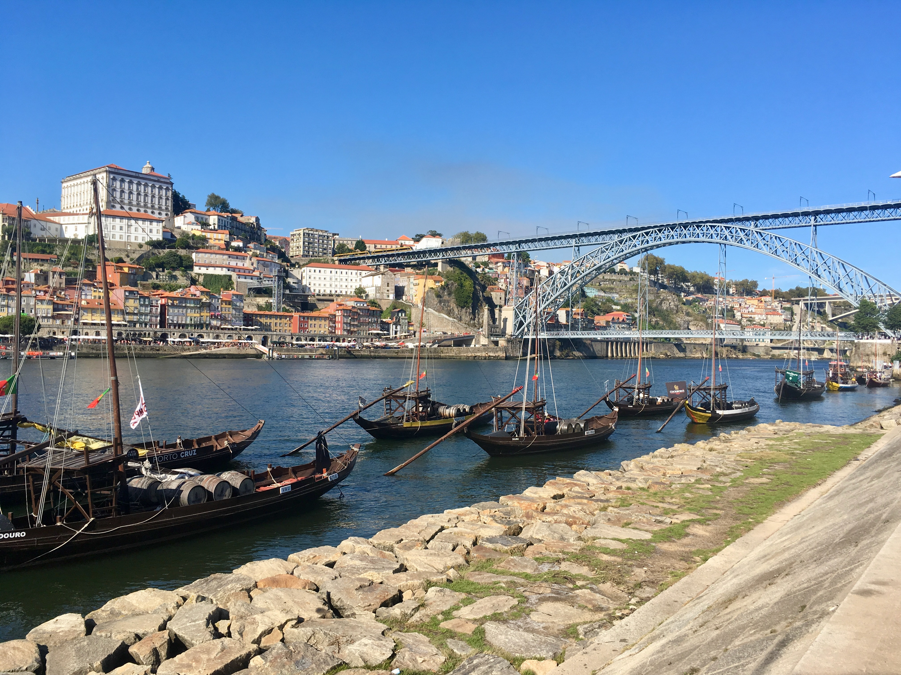

Why Porto?
Porto, the Capital of the North
Located along the Douro River estuary in northern Portugal, Porto is one of the oldest European centers and its core was proclaimed a World Heritage Site by UNESCO in 1996, as the "Historic Centre of Porto, Luiz I Bridge and Monastery of Serra do Pilar".
The historic area is also a National Monument of Portugal. The western part of its urban area extends to the coastline of the Atlantic Ocean. Its settlement dates back to the 2nd century BC when it was an outpost of the Roman Empire. Its combined Celtic-Latin name, Portus Cale, has been referred to as the origin of the name Portugal, based on transliteration and oral evolution from Latin.